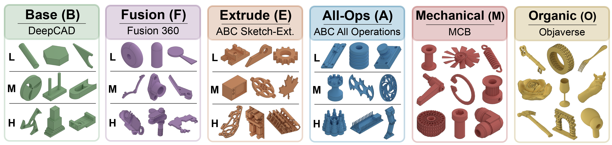
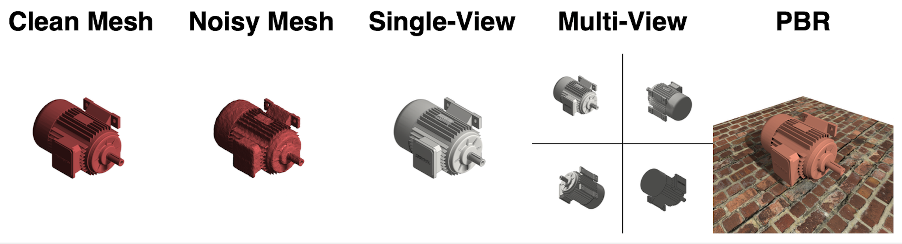

CADBench A Multimodal Benchmark for AI-Assisted CAD Program Generation
Abstract
Recovering editable CAD programs from images or 3D observations is central to AI-assisted design, but progress is difficult to measure because existing evaluations are fragmented across datasets, modalities, and metrics. We introduce CADBench, a unified benchmark for multimodal CAD program generation. CADBench contains 18,000 evaluation samples spanning six benchmark families derived from DeepCAD, Fusion 360, ABC, MCB, and Objaverse; five input modalities including clean meshes, noisy meshes, single-view renders, photorealistic renders, and multi-view renders; and six metrics covering geometric fidelity, executability, and program compactness. STEP-based families are stratified by B-rep face count and all families are diversity-sampled to support controlled analysis across complexity and object variation. We benchmark eleven CAD-specialized and general-purpose vision-language systems, generating more than 1.4 million CAD programs. Under idealized inputs, specialized mesh-to-CAD models substantially outperform code-generating VLMs, which remain far from reliable CAD program reconstruction. CADBench further reveals three recurring failure modes: reconstruction quality degrades with geometric complexity, CAD-specialized models can be brittle under modality shift, and model rankings change across metrics. Together, these results position CADBench as a diagnostic testbed for measuring progress in editable 3D reconstruction and multimodal CAD understanding.
Benchmark Overview

CADBench spans six benchmark families derived from DeepCAD, Fusion 360 Gallery, ABC, MCB, and Objaverse. STEP-based families are stratified by B-rep face count, and all families are sampled to promote object diversity, enabling controlled evaluation across geometric complexity levels and benchmark families.

CADBench includes five standardized input modalities spanning both idealized and realistic CAD reconstruction settings: clean meshes, noisy meshes, single-view grayscale renders, multi-view grayscale renders, and photorealistic physically based renders (PBR). Together, these modalities enable controlled evaluation of model robustness to downstream modality shift, testing cases of mesh corruption and rendering variation.
CADBench evaluates generated CAD programs across complementary metrics spanning geometric fidelity, executability, and program compactness.
- IoU measures global volumetric overlap between the generated and target shapes.
- SIoU measures thresholded surface alignment, capturing whether predicted surface points lie near the target surface.
- Chamfer Distance measures local surface error between sampled points on the predicted and target geometries.
- Valid Shape Rate measures the fraction of generated CAD programs that execute successfully and produce valid solids.
- Token Count and Operation Count measure program compactness, capturing how concise the generated CAD programs are.
Overall Leaderboard
Aggregate CADBench scores across all benchmark families.
IoU
Models
Leaderboard by Benchmark Family
Scores according to each of the six benchmark families.
Performance with Increasing Complexity
Model IoU scores on extrude-only benchmark splits versus increasing complexity, measured by split median face count.
Robustness to Modality Shift
Model IoU scores across different input modalities. Mesh-to-CAD methods are tested on default meshes and noisy meshes. Image-to-CAD methods are tested on single-view images, multi-view images, and photorealistic images.
Submit to the Leaderboard
To submit to the leaderboard, please follow the instructions on our GitHub about how to test your model and submit your results.
BibTeX
@article{doris2026cadbench,
title={CADBench: A Multimodal Benchmark for AI-Assisted CAD Program Generation},
author={Doris, Anna C and Sony, Jacob Thomas and Nehme, Ghadi and Syla, Era and Nobari, Amin Heyrani and Ahmed, Faez},
journal={arXiv preprint arXiv:2605.10873},
year={2026}
}